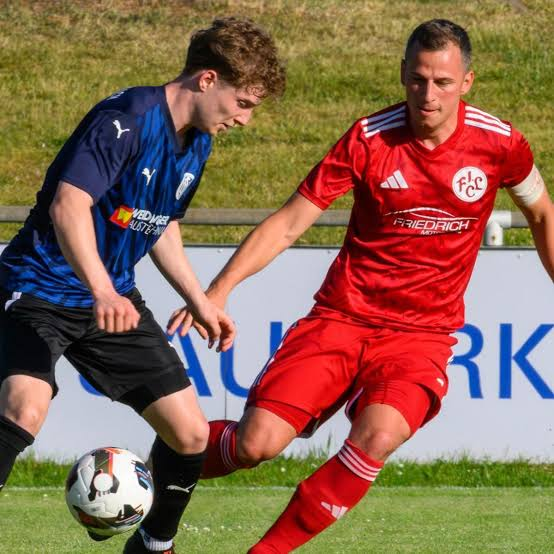
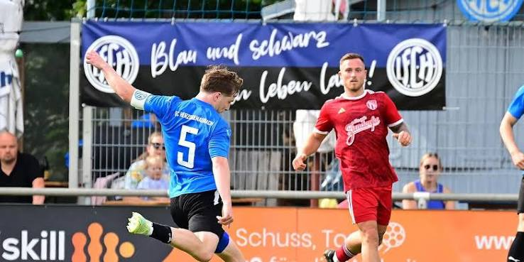
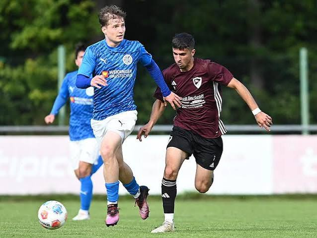
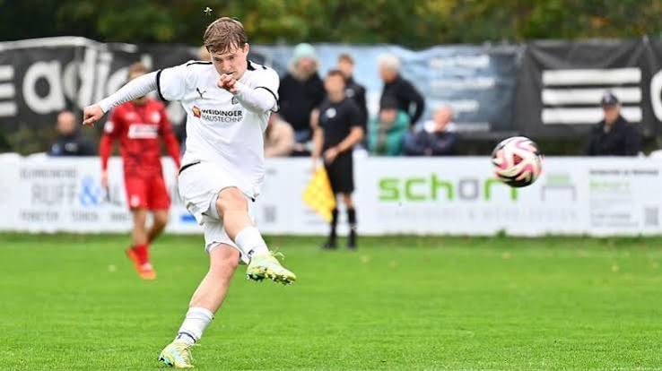
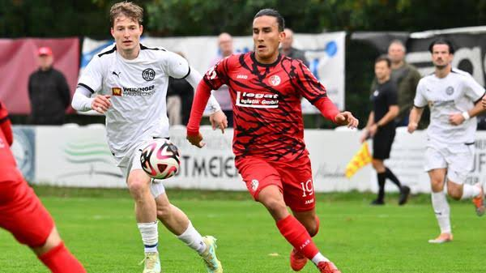

Absicherung vor der Abwehr. Erster Aufbau nach dem Ballgewinn. Mit 17 in die erste Mannschaft – und seitdem Stammspieler im defensiven Mittelfeld.
Profil
Der Sechser aus Mittelfranken
Niklas Bergner, Jahrgang 2003, spielt im defensiven Mittelfeld – zuhause auf der Sechserposition, einsetzbar auch im zentralen Mittelfeld.
Über die Nachwuchsstationen SC Eltersdorf und TV 1848 Erlangen wechselte er mit 17 direkt in die erste Mannschaft des 1. FC Herzogenaurach in die Landesliga Bayern Nordost. Dort wurde er schnell Stammspieler und erlebte fünf intensive Jahre: 2022/23 das Rennen um den Aufstieg in die Bayernliga, ein Jahr später den Abstieg, 2024/25 den knapp verpassten Wiederaufstieg – und 2025/26 die Rückkehr in die Landesliga.
Nach dem Aufstieg wechselte er im Sommer 2026 zum ASV Weisendorf in die Landesliga Bayern Nordost.
- Geburtsdatum
- 20.08.2003
- Alter
- 23 Jahre
- Nationalität
- Deutschland
- Hauptposition
- Defensives Mittelfeld
- Nebenposition
- Zentrales Mittelfeld
- Aktueller Verein
- ASV Weisendorf
- Liga
- Landesliga Bayern Nordost
- Im Team seit
- 01.07.2026
- Vertrag bis
- 30.06.2027
Karriere
Stationen
Vom Nachwuchs in Eltersdorf bis auf die Sechserposition in der Landesliga – vier Stationen, ein Weg.
- Jugend
SC Eltersdorf
Nachwuchs
Die ersten Fußballjahre im Nachwuchs des SC Eltersdorf.
- bis 2021
TV 1848 Erlangen
U19 · Landesliga Nordwest
Letzte Nachwuchsstation in Erlangen – der Sprung in den Herrenbereich rückte näher.
- 2021
1. FC Herzogenaurach
Landesliga Bayern Nordost · Herren I · mit 17
Mit 17 direkt in die erste Mannschaft – und schnell Stammplatz im defensiven Mittelfeld.
- 2022/23
Aufstiegsrennen zur Bayernliga
1. FC Herzogenaurach · Landesliga Bayern Nordost
Mit dem Team bis zuletzt im Rennen um den Aufstieg in die Bayernliga.
- 2023/24
Abstieg in die Bezirksliga
1. FC Herzogenaurach · Landesliga Bayern Nordost
Auf das Aufstiegsrennen folgte eine schwierige Saison und der Gang in die Bezirksliga.
- 2024/25
Aufstieg knapp verpasst
1. FC Herzogenaurach · Bezirksliga Mittelfr. Nord
Direkt der Angriff auf die Rückkehr – der Aufstieg in die Landesliga wurde nur knapp verpasst.
- 2025/26
Aufstieg in die Landesliga
1. FC Herzogenaurach · Bezirksliga Mittelfr. Nord
Im zweiten Anlauf geschafft: Rückkehr in die Landesliga Bayern Nordost.
- seit 07/2026
ASV Weisendorf
Landesliga Bayern Nordost
Nach dem Aufstieg mit Herzogenaurach der Wechsel nach Weisendorf – als Sechser im Zentrum.
Spielerprofil
Rolle, Position, Anspruch
- Sechser
Defensives Mittelfeld: Absicherung vor der Abwehr, erster Aufbau nach dem Ballgewinn.
- Achter
Zentrales Mittelfeld als Nebenposition – zwischen den Linien und im Spiel nach vorn.
- Mit 17
Der Sprung aus der U19 direkt in die Landesliga-Mannschaft des 1. FC Herzogenaurach.
- Stammspieler
Fünf Jahre gesetzt in Herzogenaurach – vom Aufstiegsrennen zur Bayernliga bis zum Aufstieg in die Landesliga 2025/26.
Daten
Leistungsdaten
| Saison | Verein | Liga | Spiele | Tore |
|---|---|---|---|---|
| 26/27 | ASV Weisendorf | Landesliga Nordost | 3 | 0 |
| 25/26 | 1. FC Herzogenaurach | Bezirksliga Mittelfr. Nord | 22 | 5 |
| 24/25 | 1. FC Herzogenaurach | Bezirksliga Mittelfr. Nord | 16 | 5 |
| 23/24 | 1. FC Herzogenaurach | Landesliga Nordost | 15 | 1 |
| 22/23 | 1. FC Herzogenaurach | Landesliga Nordost | 9 | 1 |
| Frühjahr 22 | 1. FC Herzogenaurach | Landesliga Nordost | 4 | 0 |
| Herbst 21 | 1. FC Herzogenaurach | Landesliga Nordost | 17 | 0 |
| 20/21 | TV 1848 Erlangen U19 | U19 Landesliga Nordwest | 2 | 0 |
| Gesamt erfasst | 88 Spiele | 12 Tore | ||
Datenstand Oktober 2026. Quellen: FuPa, Transfermarkt, BFV.
Spielszenen
90 Szenen aus 19 Spielen
Ballgewinne, Spieleröffnungen, Tore – sortiert nach Gegner, Liga und Datum.
Spielszenen ansehenImpressionen
Am Platz
Mittelfranken · Flutlicht · 90 Minuten





Kontakt
Anfragen willkommen
Für sportliche Anfragen, Probetrainings oder ein Gespräch – einfach direkt melden. Ich antworte in der Regel innerhalb weniger Tage.